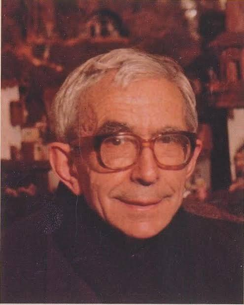
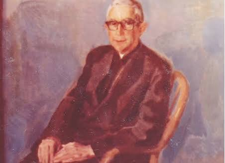

Introducción
Joaquín Erviti Lazcano nació en Estella (Navarra) el 12 de octubre de 1912. A sus 15 años, cuando iba al colegio escolapio de su ciudad, decidió hacerse religioso de esa Orden. Su formación empezó en Peralta de la Sal, Allí tuvo como maestros a los Beatos Manuel Segura y Faustino Oteiza, que más tarde serían martirizados. Estudió magisterio, filosofía y teología en Irache y Albelda de Iregua. A finales del año 1933, entró a la comunidad del Colegio Calasanz de Pamplona. Luego de la Guerra Civil, volvió a Pamplona y se quedó allí hasta el año 1999, año de su fallecimiento.
Un educador nacido para enseñar a los niños
El padre Joaquín dedicó sesenta años de su vida a la educación de los niños. Sus alumnos aprendían con él a leer, a trazar las primeras letras y a rezar. Cientos de alumnos de Navarra aprendieron a silabear y escribir gracias al padre Joaquín, que inventó el método fonomímico para su aprendizaje. Con la colaboración del Venerable Pedro Díez Gil, escolapio (1913-1983), implementó un sistema eficaz que integraba conocimiento y habilidades promoviendo la capacidad lectora del alumno. Ambos son considerados pioneros de la educación infantil en escuelas de toda España.
Él configuró el aula como auténtico espacio de conocimiento y relación del alumno con la realidad, con los otros y también con Dios. Esto lo logró mediante un mundo propio de formas e imágenes, diseño de mobiliario adaptado al mismo y su experiencia como catequista para integrar fe, cultura y vida. Gracias a su imaginación y conocimientos de la literatura española, supo acompañar su actividad docente, su celebración de la vida y su felicitación sencilla y fraterna a sus amigos y hermanos escolapios con escritos y poemas.
Quienes le conocieron se dieron cuenta de que él era distinto. Su modo de ser excepcional se transparentó entre los que compartieron con él vida y tareas en Pamplona: adultos, familias, educadores, alumnos. El padre Pedro Aguado, recordándolo, dijo: “El padre Joaquín era único. En las celebraciones penitenciales que hacíamos con los alumnos, su fila era siempre la más larga, porque muchos de los chicos querían confesarse con él, por la confianza que les inspiraba. Su finura y delicadeza eran cotidianas, como su inteligencia para conocernos a todos y para decir una palabra de paz y acogida”.
Y un antiguo alumno, le recuerda así: “El padre Joaquín fue durante muchos años algo así como el símbolo vivo del colegio. La encarnación misma de la paciencia, la humildad y la mansedumbre. El sacerdote y el maestro bueno en la plenitud del calificativo. Algo así tuvo que ser San José de Calasanz, aunque sin gafas y con una perilla entrecana, como se le representaba en las estampas. Al menos así me imaginaba yo, de parvulico, al Santo Fundador, cuando en el día de su fiesta le cantábamos a pleno pulmón aquel himno: Padre, que de los niños buscaste siempre el bien”. El proceso de canonización del Siervo de Dios Joaquín Erviti Lazcano comenzó en el año 2004.
Vida como religioso y obras
El padre Joaquín tomó el hábito escolapio el 13 de octubre de 1927, en Peralta de la Sal y profesó sus votos simples el 14 de octubre de 1928. El 25 de marzo de 1935 se consagra definitivamente a Dios por medio de la profesión solemne. Fue ordenado sacerdote el 14 de junio de 1936, en Pamplona, con 23 años, por el monseñor Marcelino Olaechea. Realizó sus labores pastorales como capellán de Pelayos y, en el Regimiento Oviedo, en los frentes de Granada, Extremadura, Córdoba y Batalla del Ebro. En 1972 recibió la medalla al mérito del trabajo (distinción profesional docente). Entre sus obras se encuentran:
- Chiquitín, I y II (didáctica de la lectura; más de 500.000 ejemplares difundidos, en varias ediciones).
- Dibujos y letras (didáctica de la escritura).
- Sonrisas (en colaboración: didáctica de la lectura).
- Enciclopedia infantil (en colaboración).
- Poesías (en diversas revistas).
¿Cómo se ve su lugar de nacimiento ahora?
Imágenes del Siervo de Dios Joaquín Erviti Lazcano

